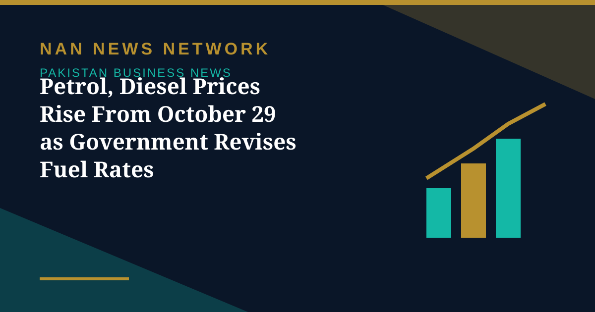

Petrol, Diesel Prices Rise From October 29 as Government Revises Fuel Rates

The government has increased the price of petrol by Rs1.85 per litre and high-speed diesel by Rs1.75 per litre, with the revised rates effective from October 29, 2026, according to reports from the Petroleum Division. Petrol now costs Rs377.91 per litre, up from Rs376.06, while high-speed diesel costs Rs399.82 per litre, up from Rs398.07.
How the revision was made
According to the Petroleum Division, the Oil and Gas Regulatory Authority (OGRA) revised the ex-depot prices under the federal government's petroleum pricing mechanism. The division attributed the changes to global developments, including fluctuations in Platts rates, premiums and other incidental charges.
What it means for households and businesses
The increase is expected to raise fuel expenses for households, commuters and businesses already facing high transportation and operating costs. Higher diesel prices may also push up freight and public transport expenses, potentially increasing the cost of goods and services that depend on road transport.
The wider fuel picture
Fuel prices in Pakistan are revised on a fortnightly cycle linked to international market movements and currency trends, so each revision reflects the prevailing global price environment rather than a permanent new level. Consumers and transport operators typically watch the next revision closely, as further movements in global prices or the exchange rate can move pump prices again.
Motorists are advised to check the notified rates at their local fuel stations, as the revised prices apply from October 29.
Sources: Public news reports, October 2026.
More on Pakistan Business News
- PSX Extends Recovery as KSE-100 Closes Above 167,000 on October 29
- KSE-100 Gains 1,269 Points to Close Above 165,700
- Fauji Fertilizer's Nine-Month Profit Hits Rs71 Billion on Strong Urea Demand
- KSE-100 Climbs 1,428 Points to Close at 164,467 in Bullish Session
- Pakistan Signs $2.25 Billion Deal for Lithium Battery Gigafactory in Rawalpindi
- Gold Prices Rise by Rs1,400 per Tola in Pakistan on Monday
- Business Confidence Falls to 48 in October, State Bank Survey Shows
- Diesel Raised to Rs393.66 a Litre, Petrol Unchanged at Rs377.71
- FBR Activates Faceless Tax Audit System From October 15
- Pakistan-Iran Trade Disruption Puts $2.8 Billion Annual Trade at Stake